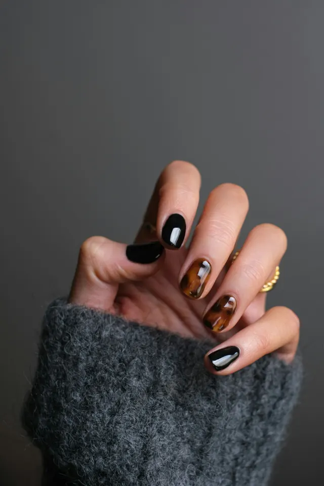
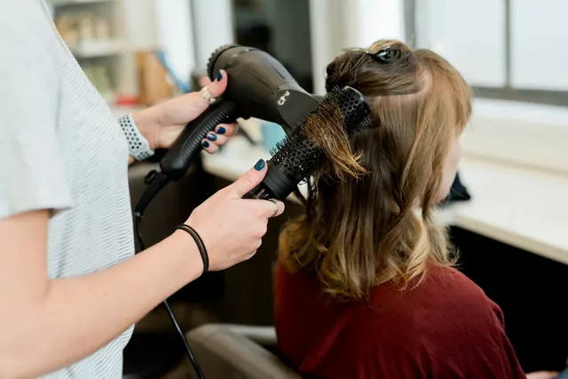
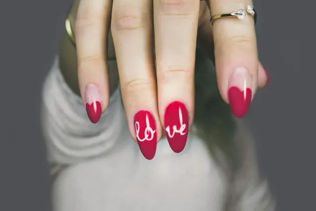
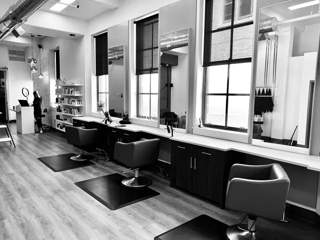

Galeria
Antes e depois, sem promessa exagerada.
Arraste a barra para comparar. Este é um projeto conceito: o “antes” é a mesma foto com filtro, só para mostrar como o recurso funciona. Nenhuma das pessoas das fotos é cliente do salão fictício.



Clima do ateliê
Luz, espelho e mãos ocupadas






Fotos: Unsplash (licença Unsplash, uso livre), editadas e otimizadas. Todas ilustrativas.